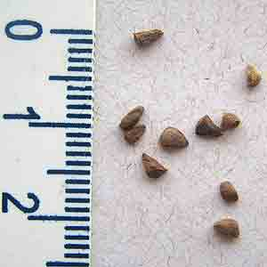
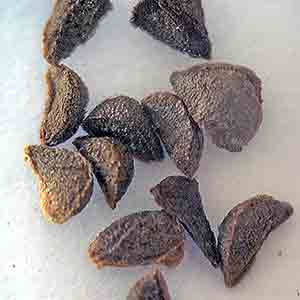
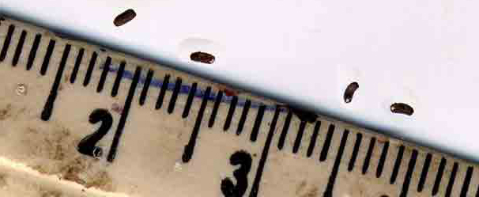
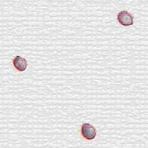
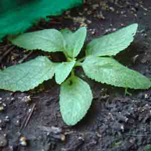

Bogus "Salvia divinorum" seeds
The Salvia divinorum Research and Information Center
is created and maintained by
Daniel Siebert
Buyer beware: Several people have been selling bogus "Salvia divinorum" seeds on eBay. Below are some photos that were sent to me by people who purchased the bogus seeds. These are definitely NOT Salvia divinorum seeds. To see photos of actual Salvia divinorum seeds, go here and here.
I have received reports that bogus seeds have been sold by several merchants. Their eBay IDs are: "nenorian," "journeytomars," "mrb2388," "ellsworthb," "gi20000," "schulz362," "bsplants," "copiapoas," "munosch," "rammerryan," and "sweetgapeach7." Some of these vendors are the same person using different vendor names. It is possible that some of these people may use other eBay IDs in the future. Some of them have also been known to sell bogus kratom and cacti seeds.
Salvia divinorum plants hardly ever produce seeds, therefore they are extremely rare. If you see them being offered for sale, chances are good that they are not authentic.
Don't be fooled by these "bait and switch" scams.
|  |
 |
Seeds shown with metric ruler
photo received November 28, 2005 |
Close-up photo
photo received January 22, 2006 |
|  |
Seeds shown with metric ruler
photo received January 31, 2006 |
|  |
 |
Seeds sold by "nenorian"
photo received February 16, 2006 |
Plant raised from seeds sold by "nenorian"
photo received February 15, 2006 |
|